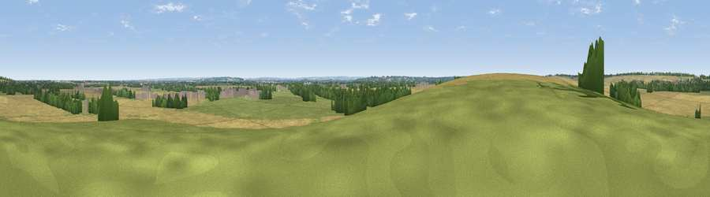

Viewpoint near Coton
#31514 in England · top 22% of its area beats it · near CotonWhere it is
The exact computed spot (TL 41016 57336). Click the marker for map links.
The view, rendered

A 360° render of this exact spot computed from the terrain model, tree cover and land cover — summer colours, afternoon light, calibrated against photographs of famous viewpoints. Real trees, hedges and buildings will differ in detail.
The panorama
Grey silhouette: terrain skyline in each direction (720 bearings, Earth curvature and refraction included). Dashed green: skyline with trees (+15 m) and buildings (+8 m) as obstacles. Blue strip: how far the ground is visible on each bearing.
Where the view opens
Wedge length = distance to the farthest visible ground on that bearing (vegetation-aware). Rings at 10, 25 and 50 km.
What fills the view
56% cropland · 29% grassland · 11% woodland · 4% built-up
Angular shares of the visible panorama (visual magnitude), not map area. Landscape diversity 0.46 (0–1 Shannon).
Key numbers
More beautiful places nearby
The staircase of upgrades: each row has a higher view potential than everything closer. Driving times are estimates from straight-line distance, calibrated against real road routing — check an actual route before setting out.
| Place | Direction | Drive | Score |
|---|---|---|---|
| Viewpoint near Harlton | SSW · 6 km | ~12 min | 49.6 |
| Viewpoint near Stapleford | ESE · 9 km | ~18 min | 54.8 |
| Viewpoint near Royston | SSW · 18 km | ~32 min | 56.6 |
| Viewpoint near Hexton | SW · 40 km | ~59 min | 65.4 |
| Viewpoint near Church End | SW · 54 km | ~76 min | 65.8 |
| Beacon Hill | SW · 60 km | ~83 min | 74.1 |
| Viewpoint near Halton | SW · 70 km | ~94 min | 74.3 |
| Coombe Hill Monument | SW · 75 km | ~99 min | 75.5 |
52.19623, 0.06178 · source: osm viewpoint · position refined by local search. Computed location — check access rights before visiting.